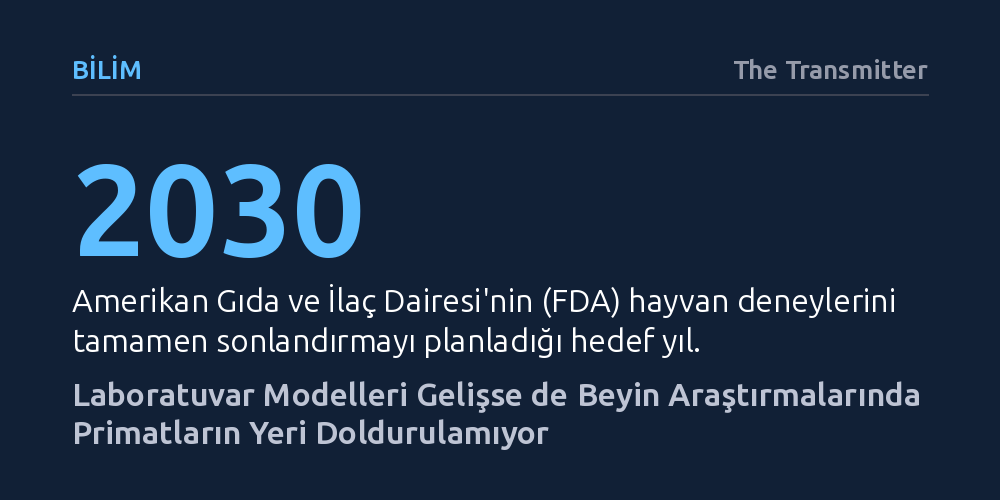

BILIM · The Transmitter · 2026-10-10
ABD federal kurumları hayvan deneylerini sonlandırma adımları atsa da beyin organoidleri ve bilgisayar modelleri henüz canlı bir organizmanın algı ve bilişsel kapasitesini karşılayamıyor. Nörobilimciler, primat araştırmalarının durdurulması halinde insan beynine dair birçok temel sorunun yanıtsız kalacağını vurguluyor.
Yapay modellerin hızla ilerlemesine rağmen karmaşık sinir sistemini ve insan zihnini anlamak için canlı primat çalışmalarının neden hâlâ ikame edilemez olduğunu gösteriyor.

Amerika Birleşik Devletleri'ndeki federal sağlık otoritelerinin son dönemde aldığı kararlar, biyomedikal araştırmalarda hayvan modellerinin devrinin kapandığı izlenimini yaratıyor. Gıda ve İlaç Dairesi (FDA) 2030 yılına kadar tüm hayvan deneylerini aşamalı olarak bitirmeyi hedeflerken, Hastalık Kontrol ve Önleme Merkezleri (CDC) insan dışı primat programının kapısına kilit vurdu. Ulusal Sağlık Enstitüleri (NIH) de benzer şekilde kaynaklarını organoidler ve hesaplamalı modeller gibi hayvansız alternatif yöntemlere yönlendireceğini duyurdu.
Fon sağlayıcıların ve denetleyici kurumların bu politikaları, kamuoyunda laboratuvarda geliştirilen yapay sistemlerin biyolojik organizmaların yerini almaya hazır olduğu kanaatini güçlendiriyor. Ancak bilim dünyası, mevzuattaki bu hızlı değişimin laboratuvarlardaki gerçeklerle ne derece örtüştüğünü sorguluyor.
Laboratuvarda üretilen hücresel yapılar ve bilgisayar simülasyonları büyük bir bilimsel heyecan yaratsa da uzmanlara göre bu teknolojiler henüz tam anlamıyla olgunlaşmış değil. Tulane Ulusal Biyomedikal Araştırma Merkezi yöneticisi Jay Rappaport, geliştirilen yenilikçi yaklaşımların umut verici olduğunu ancak "bütün bir hayvanın yerini almaya henüz tam anlamıyla hazır olmadıklarını" vurguluyor.
Hesaplamalı modeller ve beyin organoidleri, indirgenmiş biyolojik mekanizmaları anlamak için kıymetli veriler sunsa da temel bir kısıta sahip: Gerçek bir bedenden gelen duyusal girdilerden, algı süreçlerinden ve bilişsel kapasiteden tamamen yoksunlar. Beynin çevresiyle kurduğu dinamik ilişkiyi izole doku kültürlerinde taklit etmek şu anki teknolojiyle mümkün görünmüyor.
Nörobilimciler sinir sistemini incelemek için farklı hayvan türlerini kullansalar da insan beynine yapısal ve işlevsel benzerlik açısından en yakın canlı grubu maymunlar. Primatların insanla paylaştığı evrimsel yakınlık; görme duyusu, motor beceriler, sosyal davranışlar, gelişim ve yaşlanma süreçlerinin altında yatan karmaşık devreleri aydınlatmak için bu canlıları benzersiz bir konuma yerleştiriyor.
Araştırmacılar, primat deneylerine verilen desteğin erken kesilmesinin beyin mekanizmalarına dair en temel soruları karanlıkta bırakacağı uyarısında bulunuyor. Yapay modeller biyolojik karmaşıklığı bütünüyle yakalayana kadar, primat temelli nörobilim araştırmalarının bilimsel ilerleme için zorunlu bir halka olmaya devam ettiği belirtiliyor.